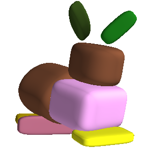

I am a PhD student at the Max Planck ETH Center for Learning Systems , advised by Andreas Geiger and Luc van Gool. Prior to this, I was an undergraduate in the School of Electrical and Computer Engineering in the Aristotle University of Thessaloniki in Greece, where I worked with Anastasios Delopoulos and Christos Diou. My research is in computer vision, particularly in the areas of interpretable shape representations, scene understanding and unsupervised deep learning.
Despoina Paschalidou

News
- 31.03.2020: We released simple-3dviz a library for 3D visualization using Python and OpenGL. Code and documentation are available!
- 23.02.2020: Our paper on unsupervised hierarchical primitive-based reconstruction was accepted in CVPR 2020.
- 10.02.2020: I am interning at NVIDIA Research in Toronto this summer!!
- 05.05.2019: We released the PyTorch code for our Superquadrics Revisited: Learning 3D Shape Parsing beyond Cuboids paper.
- 02.03.2019: Two papers accepted in CVPR 2019.
- 28.02.2018: RayNet: Learning Volumetric 3D Reconstruction with Ray Potentials was accepted in CVPR 2018. Check our project page for code and documentation.
Publications

Computer Vision and Pattern Recognition (CVPR), 2020
Abstract Project page Paper Poster Code Blog Slides Video Bibtex
Humans perceive the 3D world as a set of distinct objects that are characterized by various low-level (geometry, reflectance) and high-level (connectivity, adjacency, symmetry) properties. Recent methods based on convolutional neural networks (CNNs) demonstrated impressive progress in 3D reconstruction, even when using a single 2D image as input. However, the majority of these methods focuses on recovering the local 3D geometry of an object without considering its part-based decomposition or relations between parts. We address this challenging problem by proposing a novel formulation that allows to jointly recover the geometry of a 3D object as a set of primitives as well as their latent hierarchical structure without part-level supervision. Our model recovers the higher level structural decomposition of various objects in the form of a binary tree of primitives, where simple parts are represented with fewer primitives and more complex parts are modeled with more components. Our experiments on the ShapeNet and D-FAUST datasets demonstrate that considering the organization of parts indeed facilitates reasoning about 3D geometry.
@inproceedings{Paschalidou2020CVPR,
title = {Learning Unsupervised Hierarchical Part Decomposition of 3D Objects from a Single RGB Image},
author = {Paschalidou, Despoina and Luc van Gool and Geiger, Andreas},
booktitle = {Proceedings IEEE Conf. on Computer Vision and Pattern Recognition (CVPR)},
month = jun,
year = {2020},
}
Computer Vision and Pattern Recognition (CVPR), 2019
Abstract Project page Paper Poster Code Blog Video Bibtex
Abstracting complex 3D shapes with parsimonious part-based representations has been a long standing goal in computer vision. This paper presents a learning-based solution to this problem which goes beyond the traditional 3D cuboid representation by exploiting superquadrics as atomic elements. We demonstrate that superquadrics lead to more expressive 3D scene parses while being easier to learn than 3D cuboid representations. Moreover, we provide an analytical solution to the Chamfer loss which avoids the need for computational expensive reinforcement learning or iterative prediction. Our model learns to parse 3D objects into consistent superquadric representations without supervision. Results on various ShapeNet categories as well as the SURREAL human body dataset demonstrate the flexibility of our model in capturing fine details and complex poses that could not have been modelled using cuboids.
@inproceedings{Paschalidou2019CVPR,
title = {Superquadrics Revisited: Learning 3D Shape Parsing beyond Cuboids},
author = {Paschalidou, Despoina and Ulusoy, Ali Osman and Geiger, Andreas},
booktitle = {Proceedings IEEE Conf. on Computer Vision and Pattern Recognition (CVPR)},
month = jun,
year = {2019},
}
Computer Vision and Pattern Recognition (CVPR), 2019
Abstract Paper Code Video Bibtex
Despite significant progress in image-based 3D scene flow estimation, the performance of such approaches has not yet reached the fidelity required by many applications. Simultaneously, these applications are often not restricted to image-based estimation: laser scanners provide a popular alternative to traditional cameras, for example in the context of self-driving cars, as they directly yield a 3D point cloud. In this paper, we propose to estimate 3D motion from such unstructured point clouds using a deep neural network. In a single forward pass, our model jointly predicts 3D scene flow as well as the 3D bounding box and rigid body motion of objects in the scene. While the prospect of estimating 3D scene flow from unstructured point clouds is promising, it is also a challenging task. We show that the traditional global representation of rigid body motion prohibits inference by CNNs, and propose a translation equivariant representation to circumvent this problem. For training our deep network, a large dataset is required. Because of this, we augment real scans from KITTI with virtual objects, realistically modeling occlusions and simulating sensor noise. A thorough comparison with classic and learning-based techniques highlights the robustness of the proposed approach.
@inproceedings{Behl2019CVPR,
title = {PointFlowNet: Learning Representations for Rigid Motion Estimation from Point Clouds },
author = {Behl, Aseem and Paschalidou, Despoina and Donne, Simon and Geiger, Andreas},
booktitle = {Proceedings IEEE Conf. on Computer Vision and Pattern Recognition (CVPR)},
month = jun,
year = {2019},
}
Computer Vision and Pattern Recognition (CVPR), 2018
(Spotlight Presentation)
Abstract Paper Poster Code Video Bibtex
In this paper, we consider the problem of reconstructing a dense 3D model using images captured from different views. Recent methods based on convolutional neural networks (CNN) allow learning the entire task from data. However, they do not incorporate the physics of image formation such as perspective geometry and occlusion. Instead, classical approaches based on Markov Random Fields (MRF) with ray-potentials explicitly model these physical processes, but they cannot cope with large surface appearance variations across different viewpoints. In this paper, we propose RayNet, which combines the strengths of both frameworks. RayNet integrates a CNN that learns view-invariant feature representations with an MRF that explicitly encodes the physics of perspective projection and occlusion. We train RayNet end-to-end using empirical risk minimization. We thoroughly evaluate our approach on challenging real-world datasets and demonstrate its benefits over a piece-wise trained baseline, hand-crafted models as well as other learning-based approaches.
@inproceedings{Paschalidou2018CVPR,
title = {RayNet: Learning Volumetric 3D Reconstruction with Ray Potentials},
author = {Paschalidou, Despoina and Ulusoy, Ali Osman and Schmitt, Carolin and Gool, Luc and Geiger, Andreas},
booktitle = {IEEE Conference on Computer Vision and Pattern Recognition (CVPR)},
month = jun,
year = {2018}
}
European Signal Processing Conference (EUSIPCO), 2017
Abstract Paper Poster Code Bibtex
This paper introduces a family of local feature aggregation functions and a novel method to estimate their parameters, such that they generate optimal representations for classification (or any task that can be expressed as a cost function minimization problem). To achieve that, we compose the local feature aggregation function with the classifier cost function and we backpropagate the gradient of this cost function in order to update the local feature aggregation function parameters. Experiments on synthetic datasets indicate that our method discovers parameters that model the class-relevant information in addition to the local feature space. Further experiments on a variety of motion and visual descriptors, both on image and video datasets, show that our method outperforms other state-of-the-art local feature aggregation functions, such as Bag of Words, Fisher Vectors and VLAD, by a large margin.
@inproceedings{katharopoulos2017learning
title = {Learning local feature aggregation functions with backpropagation},
author = {Paschalidou, Despoina and Katharopoulos, Angelos and Diou, Christos and Delopoulos, Anastasios},
publisher = {IEEE},
month = aug,
year = {2017},
url = {http://ieeexplore.ieee.org/Abstract/document/8081307/},
}
ACM Multimedia Conference (ACMM), 2016
Abstract Paper Poster Code Blog Bibtex
This paper introduces fsLDA, a fast variational inference method for supervised LDA, which overcomes the computational limitations of the original supervised LDA and enables its application in large-scale video datasets. In addition to its scalability, our method also overcomes the drawbacks of standard, unsupervised LDA for video, including its focus on dominant but often irrelevant video information (e.g. background, camera motion). As a result, experiments in the UCF11 and UCF101 datasets show that our method consistently outperforms unsupervised LDA in every metric. Furthermore, analysis shows that class-relevant topics of fsLDA lead to sparse video representations and encapsulate high-level information corresponding to parts of video events, which we denote 'micro-events'
@inproceedings{katharopoulos2016fast
title = {Fast Supervised LDA for Discovering Micro-Events in Large-Scale Video Datasets},
author = {Katharopoulos, Angelos and Paschalidou, Despoina and Diou, Christos and Delopoulos, Anastasios},
booktitle = {Proceedings of the 2016 ACM on Multimedia Conference},
pages = {332,336},
month = oct,
year = {2016},
url = {http://dl.acm.org/citation.cfm?id=2967237},
month_numeric = {10}
}
Talks

Invited at:
- University of Toronto and NVIDIA: 07/10/2020
- Leonidas Guibas Laboratory @Standford: 17/07/2020